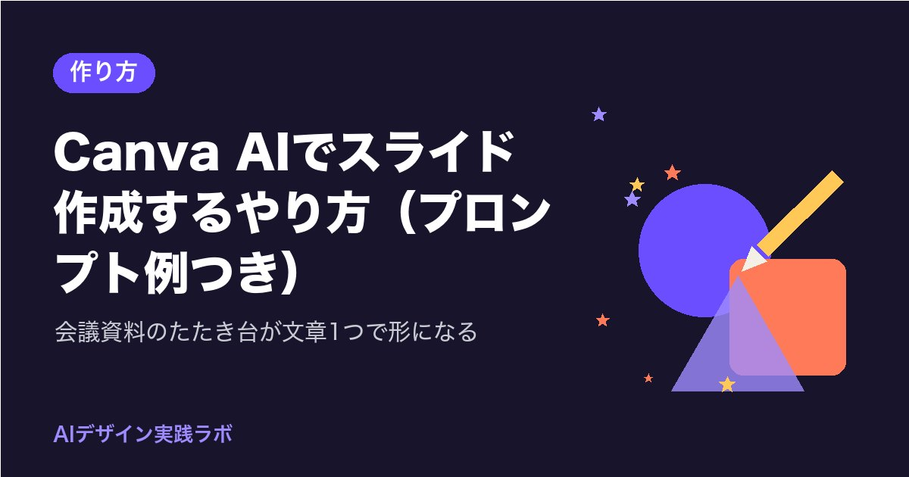

Canva AIでスライド作成するやり方（プロンプト例つき）｜会議資料のたたき台が文章1つで形になる

来週の会議の資料、まだ白紙のままではありませんか。
Canva AIでスライドを作成するやり方は、Canvaのホーム画面で「Canva AI」を選び、作りたい資料の内容を文章（プロンプト）で書いて送るだけです。数枚のスライドのたたき台が出てくるので、あとは自分の言葉に直していきます。
この記事では、生産管理や営業支援の会議資料を例に、そのまま使えるプロンプト例と、できたスライドを会社の資料に整える手順を紹介します。
先に答え：Canva AIでスライドを作る3つの手順
執筆時点（2026年10月）のCanvaの公式ヘルプで確かめた流れは、次の3つです。画面の名前や並びは変わることがあるので、見つからないときは公式ヘルプで確認してください。
- Canvaのホーム画面で「Canva AI」を選ぶ
- 入力欄に、作りたい資料の内容を文章で書き、Enterキーか「送信」で送る
- できあがった案がホーム画面の簡易エディタに出るので、「デザインを編集」を選んで、ふだんの編集画面で直す
入力欄のそばにある「＋」のボタンからは、手元のファイルのアップロードや、Canvaにある素材の追加、ブランドの設定の適用などができます（公式ヘルプの説明より。使える項目はプランや時期で変わることがあります）。
編集画面の「テンプレート」タブから入る道もあります。4語以上のキーワードを入れて検索し、「お探しのものが見つかりませんか？」の下にある「Canva AIを試す」を選ぶと、同じようにプロンプトから新しいページが作られます。
無料プランでどこまで使えるか、月に何回まで作れるかは、公式のプランの案内で確かめてから使うと安心です。Canva AIでSNS画像を作る方法でも、同じ入り口の使い方を紹介しています。
そのまま使えるプロンプト例（会議・報告・引き継ぎ）
AIに頼むときの文章は、「誰に」「何を」「何枚で」「どんな雰囲気で」の4つが入っていると、1回目から使える案が出やすくなります。【 】の中を、あなたの資料に置き換えてください。
例1：月例の生産会議の報告
聞く人は【工場長と各課の課長】です。
1枚目は表紙、2枚目は今月の要点3つ、3〜5枚目は【生産実績・不良の傾向・来月の対策】を1枚ずつ、6枚目はお願いしたいことです。
文字は少なめで、1枚に見出し1つと箇条書き3つまで。落ち着いた紺色を基調にしてください。
例2：取引先への提案のたたき台
お客さまの困りごと、提案の内容、導入までの流れ、よくある質問の順番にしてください。
数字が入る所は【 】と空欄にしておいてください。清潔感のある白ベースで、写真は控えめにしてください。
例3：異動する人への引き継ぎ資料
聞く人は後任の【役職】です。業務の全体像、毎日・毎週・毎月の仕事、関係する部署と連絡先の欄、つまずきやすい所、資料の置き場所の順番にしてください。
連絡先や固有名詞は空欄にしておいてください。
3つの例に共通するのは、数字や名前を空欄にしていることです。AIに本物の数字を書かせるより、空欄にしておいて自分で入れるほうが、間違いが入りにくく、社外秘の情報を入力欄に打ち込まずにすみます。
ChatGPTやCopilotで構成を作ってから渡すと、もっと楽になる
Canva AIにいきなり頼むより、先に「何を、どの順番で話すか」を決めておくと、スライドの出来が安定します。会社のPCにCopilotが入っている人は、Copilotに構成だけ作ってもらい、その文章をCanva AIの入力欄に貼る、という二段構えがおすすめです。
枚数は【6】枚。各スライドの「見出し」と「話す要点を2つ」だけを書いてください。
装飾の提案はいりません。
この答えをコピーして、Canva AIに「次の構成でスライドを作ってください」と添えて貼れば、構成と見た目の両方が整います。チラシの文章で同じ考え方を使ったChatGPTでチラシの文章構成を作るプロンプトも、資料作りに置き換えて読めます。
私も最初は、AIに全部を一度に頼んで、見た目はきれいでも中身が薄いスライドができてしまう、というつまずきがありました。「構成は対話型AI、見た目はCanva」と分けると、どちらの直しも短くなります。
できたスライドを自分の資料に整える点検
たたき台ができたら、次の順番で手を入れます。1枚あたり数分で終わる作業です。
| 点検する所 | 見る内容 | 直し方の例 |
|---|---|---|
| 見出し | 1枚に1つ、13文字くらいで言い切れているか | 「今月の不良率は前月より改善」のように、結論を見出しに |
| 数字 | 空欄に自分の手元の本当の数字が入っているか | 出典（どの帳票から取ったか）を欄外に小さく書く |
| 言葉 | 社内で通じる言い方になっているか | AIが使った横文字を、職場でふだん使う言葉に |
| 文字の量 | 箇条書き3つまでに収まっているか | 4つ目以降は次のスライドか、口頭の説明に |
| 色と字体 | 会社の資料の雰囲気と合うか | 「ブランドの設定」や字体の統一で全体をそろえる |
| 画像 | 自社の製品や現場の写真に置き換えたか | AIが選んだ写真は雰囲気の仮置きと考える |
字体の選び方はフォントの基本と無料で商用利用できる書体に、色の決め方はAIで配色を決める方法にまとめています。どちらも、スライドの印象を短時間で整えるのに使えます。
会社で使うときの決まりと、気をつけたいこと
会社の資料をAIで作るときは、先に会社の決まり（情報の持ち出しや、外部サービスの利用規程）を確かめておくと安心です。多くの会社で線引きになるのは、次のような点です。
- 社外秘の数字、取引先の名前、個人情報は入力欄に打ち込まない。空欄にしておいて、手元で入れる
- 会社のアカウント（Microsoft 365など）で使えるAIと、個人で登録したCanvaのアカウントは、データの扱いが違うことがある。どちらで作ってよいかを確かめる
- AIが置いた写真やイラストの商用利用の条件は、Canvaの公式の案内で確認する。AI画像の著作権と商用利用の基本も合わせて読んでみてください
- 作った資料は、会社で決まった保存場所（共有フォルダなど）に保存する
決まりがはっきりしないときは、「社外に出ない社内向けの資料で、数字と名前は手で入れる」から始めると、確かめる相手にも説明しやすいです。
発表のときに手元で操作する道具があると、スライドの枚数が増えても落ち着いて話せます。

まとめ
- Canva AIでスライドを作成するやり方は、ホーム画面の「Canva AI」に文章で頼み、「デザインを編集」で整える3手順
- プロンプトには「誰に・何を・何枚で・どんな雰囲気で」を入れ、数字と名前は空欄にしておく
- 構成はChatGPTやCopilotで先に作り、見た目はCanvaに任せる二段構えだと直しが短い
- できた案は、見出し・数字・言葉・文字の量・色・画像の順に点検する
- 会社の決まりを先に確かめ、社外秘と個人情報は入力しない
まずは、来週の会議の資料を1本だけ、例1のプロンプトで作ってみませんか。たたき台が10分で出てくると、空いた時間を中身を考える時間や、家族と過ごす時間に回せます。あなたが最初にAIに任せたい資料は、どの会議のものですか。
最後まで読んでくださり、ありがとうございました。
読んだ内容から、まず1つだけ試してみませんか。今日、プロンプトを1行書いて画像を1枚作るだけでも、立派な一歩です。
あなたなら、まず何から作ってみますか？